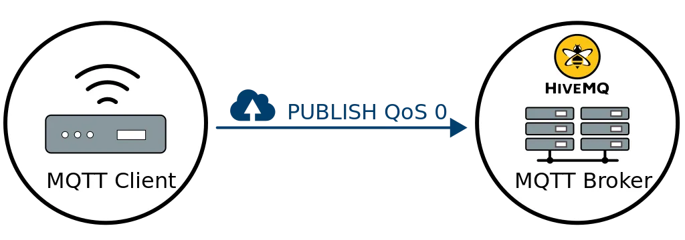
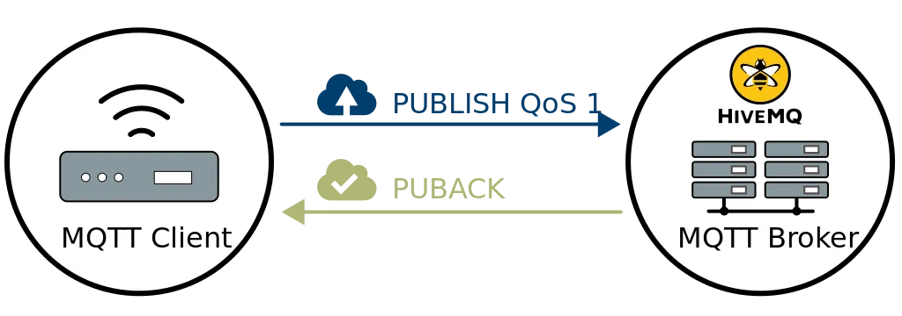
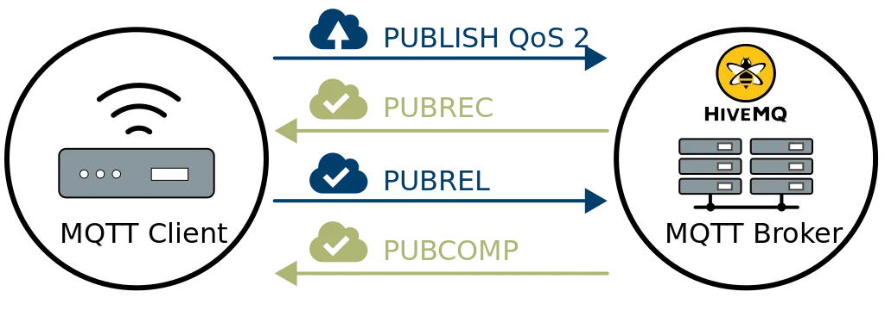

QT
MQTT
- Message Queuing: berichten worden asynchroon afgeleverd, zender en ontvanger hoeven elkaar niet te kennen.
- Telemetry: ideaal om sensordata op afstand te verzamelen en efficiënt door te sturen.
- Transport: een licht transportmechanisme om berichten te versturen en te ontvangen over allerlei netwerken.
MQTT is een licht berichtenprotocol voor kleine sensoren en mobiele toestellen: efficiënt, flexibel en betrouwbaar.
- 1999: IBM, voor het monitoren van olieleidingen via satelliet
- Open OASIS-standaard, huidige versie: MQTT 5 (2019)
Wat doet MQTT?
Publish / Subscribe
- Een client publiceert een bericht op een topic
- De broker stuurt het door naar alle clients die op dat topic geabonneerd zijn
- Zenders en ontvangers kennen elkaar niet
Topics
- Hiërarchie met slashes:
huis/woonkamer/temperatuur += één niveau:huis/+/temperatuur#= alle onderliggende niveaus:huis/#- Payload is vrij: tekst, getal, JSON, ...
Quality of Service (QoS)
Drie niveaus om de aflevering van berichten te garanderen.
Meer info


Handige extra's
- Retained message: de broker onthoudt de laatste waarde voor nieuwe abonnees
- Last Will: bericht dat de broker verstuurt als een toestel onverwacht wegvalt
- Keep alive: controleert of de verbinding nog leeft
- MQTT 5: foutcodes, vervaltijd van berichten, shared subscriptions
Weinig bandbreedte en overhead
Geoptimaliseerd voor trage, onbetrouwbare netwerken met veel vertraging.
Lichtgewicht
Weinig code nodig, dus geschikt voor toestellen met beperkte rekenkracht en geheugen.
Waar wordt MQTT gebruikt?
Internet of Things
Voorbeeld: een smart home (bv. Home Assistant) waar sensoren, actuatoren en controllers samenwerken voor verlichting, verwarming en beveiliging.
M2M (Machine-to-Machine)
Voorbeeld: machines in een fabriek die de productie op elkaar afstemmen, hun status doorgeven en de werking optimaliseren. Vaak met de industriële uitbreiding Sparkplug B.
Telemetrie en monitoring op afstand
Voorbeeld: meetstations op afgelegen plaatsen die luchtkwaliteit, weer en bodemvocht meten en naar een centrale server sturen.
Realtime berichten en meldingen
Voorbeeld: chatapps en pushmeldingen die berichten meteen afleveren, ook op een zwakke mobiele verbinding.
Populaire MQTT-brokers

Aedes: MQTT-broker in Node.js (opvolger van Mosca).
AWS IoT Core / Azure IoT Hub: MQTT als clouddienst.
Beveiliging
- Standaard is MQTT niet versleuteld (poort 1883)
- Gebruik TLS (poort 8883)
- Gebruikersnaam en wachtwoord of certificaten per toestel
- ACL's: welke client mag op welk topic publiceren of lezen
- Publieke testbrokers: iedereen kan meelezen!
Zelf proberen
- Testbroker:
test.mosquitto.org - MQTT Explorer: alle topics bekijken
- Python:
pip install paho-mqtt - Node-RED of Home Assistant om flows te bouwen
Voor- en nadelen van MQTT
| Voordelen | Nadelen |
|---|---|
| Efficiënt en lichtgewicht | Beveiliging (TLS, authenticatie) moet je zelf instellen |
| Betrouwbare aflevering dankzij QoS | De broker is een centraal punt: valt hij uit, dan valt alles stil |
| Gemaakt voor IoT en M2M | Geen vast formaat voor de payload: afspraken nodig |
| Flexibele QoS-niveaus | Vereist TCP, voor de kleinste toestellen is CoAP of MQTT-SN lichter |
| Veel gebruikt, met veel tools en libraries |